Lab 3 — Debounced 4x4 Keypad with Dual Seven-Segment Display
Introduction:
Lab 3 extends the Lab 2 hardware into a full interactive keypad interface: the FPGA scans a 4x4 matrix keypad, decodes each keypress into a 4-bit hex value, debounces mechanical contact noise, and displays the two most recently accepted keys on the dual seven-segment display multiplexed from Lab 2. The design emphasizes handling of asynchronous inputs, mechanical bounce, and multi-key ambiguity.
Design and Testing Methodology:
The design breaks down into nine modules: two synchronizers (“cols_sync.sv” and “reset_sync.sv”) for the async column and reset inputs, a non-canonical FSM “scan_counter.sv” that drives the one-hot row scan and generates two timing pulses (“sample_ok” and “end_of_scan”), a combinational “key_encoder.sv” that decodes the currently scanned row + column pattern into a hex value, “debouncer.sv” which accumulates per-full-scan observations and requires N_STABLE=3 consecutive matching full scans before accepting a keypress, “display_register.sv” which stores the last two accepted hex values, “display_scan.sv” and “seven_segment_decoder.sv” recycled from Labs 2 and 1 respectively, and the top-level “lab3_hm.sv” that wires them all together.
- “cols_sync.sv” and “reset_sync.sv” — 2-flop metastability synchronizers for the asynchronous keypad column and reset button inputs.
- “scan_counter.sv” — non-canonical FSM: a parameterized counter feeds a 2-bit state register whose combinational output logic maps state → one-hot row drive. With “max_count = 47_999” at 48 MHz, each row is asserted for ~1 ms (~4 ms per full 4-row sweep), giving each column line ample time to settle through its RC pull-up. The module “sample_ok” signal once per state (at the end of the settled window) and a “end_of_scan” signal once per full scan.
- “key_encoder.sv” — combinational lookup that combines the currently active row (one-hot from the scan counter) with the synchronized column readback (active-low, inverted internally to active-high) into a hex value + one-hot validity check.
- “debouncer.sv” — accumulator across states 00/01/10 attaches any valid press captured at “sample_ok”; the mux at “end_of_scan” folds in state 11’s live press. The evaluator then requires “N_STABLE=3” matching sweeps before pulsing “new_keypress” and updating “key_stable”. Includes multi-key rejection logic (“multi_press_seen” + combinational “multi_this_cycle”) so that pressing two keys on different rows is treated as invalid rather than attaching whichever row was scanned last.
- “display_register.sv” — 2-deep shift register that loads the newly stable key on each “new_keypress” pulse, shifting the prior value into the “previous_number” slot for display.
- “display_scan.sv” and “seven_segment_decoder.sv” — reused from prior labs, unchanged.
- “lab3_hm.sv” — top level. Instantiates all submodules plus the HSOSC, and provides only board-level combinational assigns.
Each new module has its own self-checking testbench that exercises reset, key state transitions, timing pulses, and interconnections with assert statements. The top-level testbench simulates a full keypress. Modules reused from Lab 1/2 were not re-simulated; their existing testbenches remain the source of truth.
Debouncing Strategy
The debouncer runs a “check per full scan” filter: on each “end_of_scan” pulse, the module compares the current full scan’s result (valid + hex value) against the previous scan’s result. If they match, an internal “match_counter” increments; if not, the counter resets and the new result becomes the reference. Once “N_STABLE=3” matching full scan have accumulated, the value is accepted and “new_keypress” pulses for one cycle. This filters the mechanical bounce experienced by the keys.
Multi-key Rejection Strategy
The encoder’s one-hot column check already rejects two keys pressed on the same row (both column bits set → key_valid=0). Two keys on different rows each produce a legitimate single-hot column on their own row’s scan, so we a “multi_press_seen” flag (set on any second valid capture within a sweep) plus a combinational catch for the “end_of_scan” cycle (where “sample_ok”’s else-if branch cannot fire). This forces the entire full scan result to “no press” whenever two rows show valid captures.
Technical Documentation:
The source code for the project can be found in the /labs/lab3/fpga/radiant/modules directory of the associated GitHub repository.
Documentation
Block Diagrams
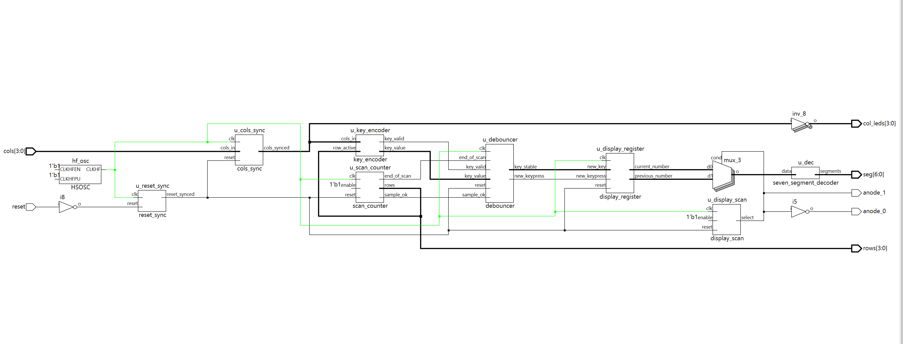
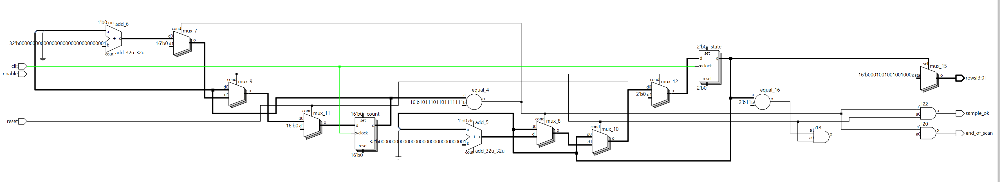
Schematic
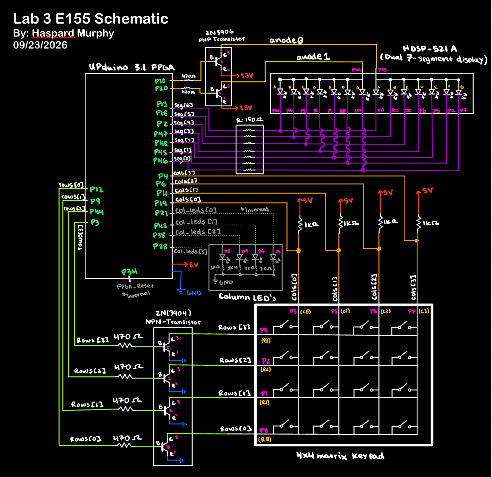
DIP switch connections for S0 and S1 data signals were removed given the change in input to keypad rows.
State Transition Diagram
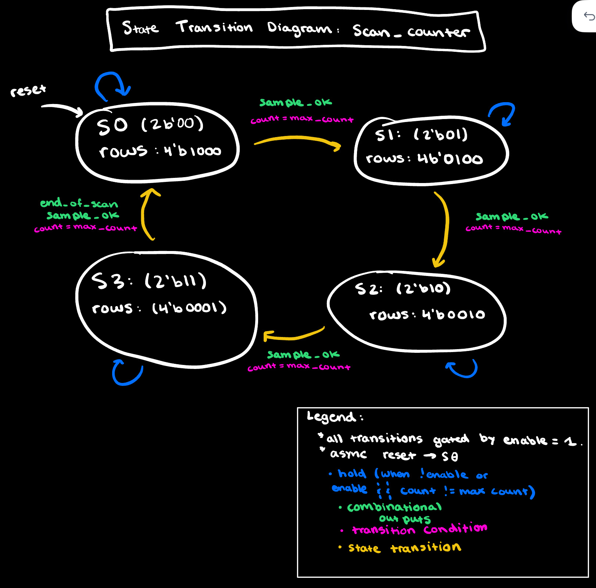
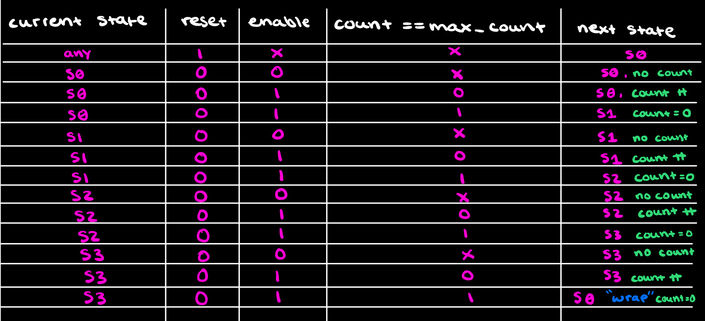
Results and Discussion
Scan Counter Simulation
All four row-scan states cycled through, cold-start reset and mid-cycle reset behavior verified, enable-freeze verified, and both timing pulses (“sample_ok” firing once per state at count=max, “end_of_scan” firing only during state 11) verified at the correct sample points. All self-checking assertions passed.
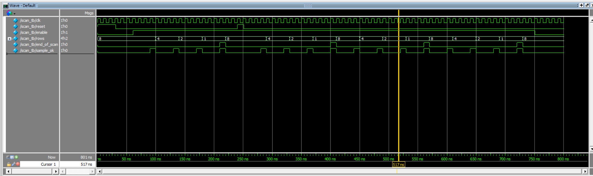

Cols Sync Simulation
Verifies that the 2-flop column synchronizer correctly propagates both a keypress transition (cols_in = 4’b1110, one key pressed) and a release transition (cols_in = 4’b1111) within exactly two clock cycles. In addition to that, also confirming that reset clears both flops to zero.
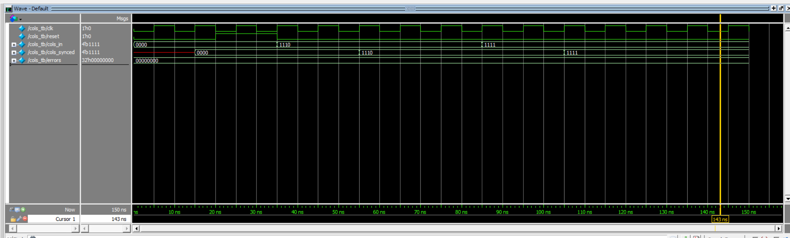

Reset Sync Simulation
Much like cols_sync, the simulation verifies that a raw reset assertion and deassertion each propagate through the 2-flop synchronizer within two clock cycles, so the internal reset_synced signal can be safely distributed to every register in the design.
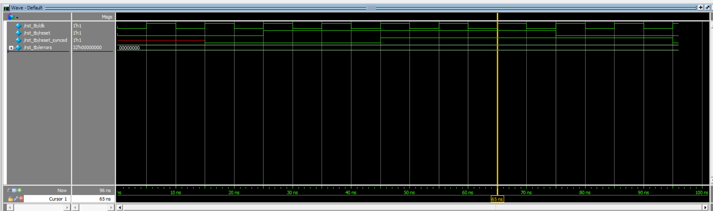

Key Encoder Simulation
Test of all 16 valid {row_active, cols_pressed} combinations mapping to their expected hex values, plus 4 invalid patterns (no press, two-column press, three-column press, single valid press on a different row) verifying that “key_valid” correctly distinguishes one-hot column patterns from noise.
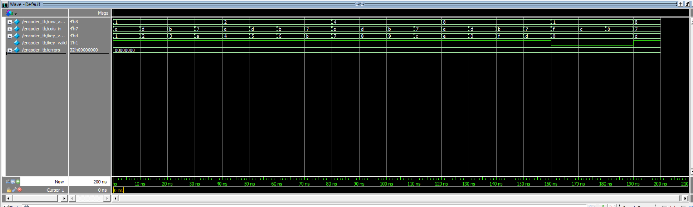
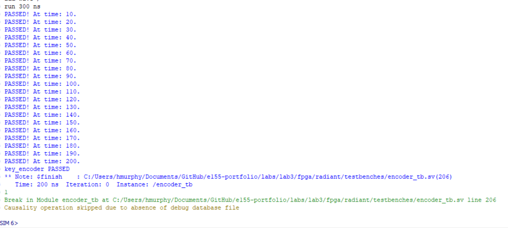
Debouncer Simulation
Two blocks: (1) a stable press of key ‘5’ held across 4 scans sets “key_stable = 4’h5” and pulses “new_keypress”; (2) a bouncy input alternating “key_valid=1/0/1/0” while “key_value” stays at 4’h5 (simulating mechanical contact chatter) is correctly rejected via “key_stable” staying at 0 and no “new_keypress” pulse firing.
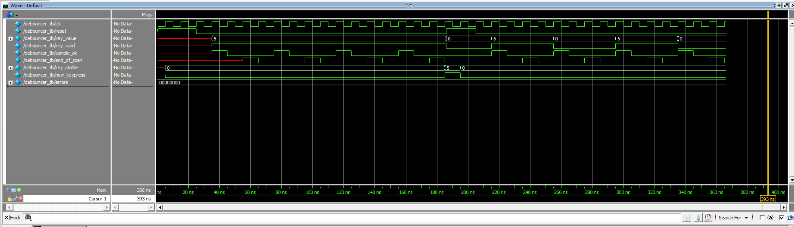

Display Register Simulation
Four blocks: reset defaults, first key load ‘5’ to current_number, shift + load ‘A’ to current_number with 5 going to previous_number, and a hold check new_keypress low leaving both registers unchanged even though new_key changes.
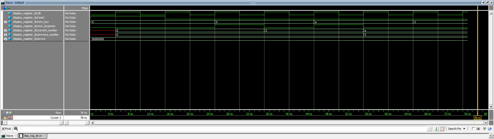

Top Module Simulation
The top-level testbench exercises the full pipeline: reset propagates through the 2-flop reset synchronizer, then a keypress drives the “cols” input. After 80 clock cycles of settled contact, “dut.current_number” is verified to equal “4’h1” — proving that the full chain (scan_counter → cols_sync → key_encoder → debouncer → display_register) correctly registers a single keypress end-to-end.
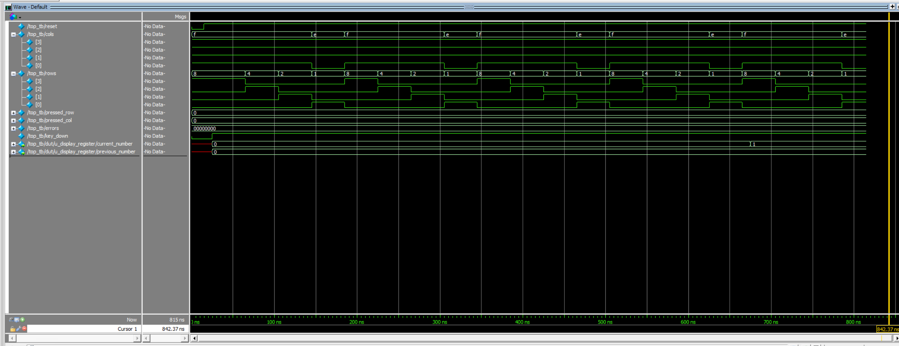

On-Board Verification
The programmed UPduino correctly decoded every one of the 16 keypad keys and displayed each as it was pressed, shifting previously accepted keys into the “previous_number” position. Mechanical bounce was filtered without visible display glitches, and the multi-key excellence case behaved as specified: pressing a second key while a first was held caused the display to hold on the first key; releasing either key allowed the remaining single-key press to register normally.
Summary & Conclusion
The design meets every functional requirement of Lab 3: the 4x4 keypad is fully scanned via a non-canonical FSM, async column and reset inputs are protected by dedicated 2-flop synchronizers, mechanical bounce is filtered through a per-full scan result accumulator requiring N_STABLE=3 matches, the two most recently accepted hex keys are displayed on the time-multiplexed dual seven-segment display, and every FF is edge-triggered with no inferred latches.
This submission meets every Proficiency requirement in the Lab 3 spec.
AI Prototype Summary
Prompting Conversation
Error Prompting & Output 1st:
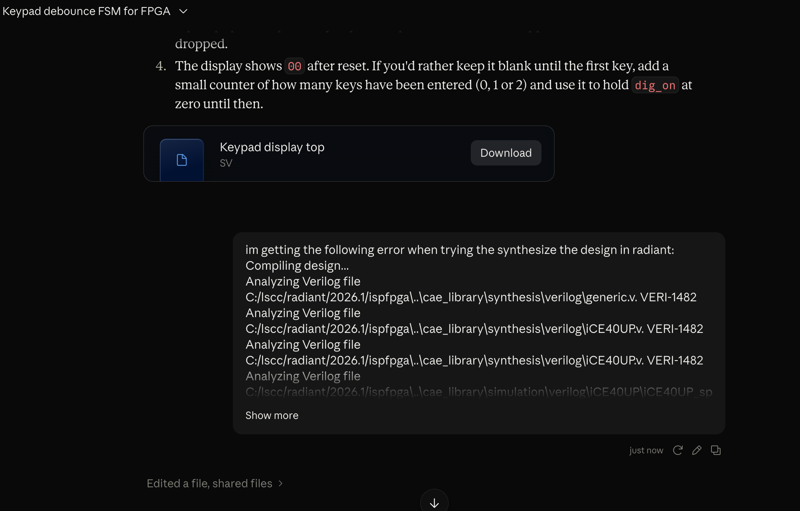
Error Prompting and Output 2nd:
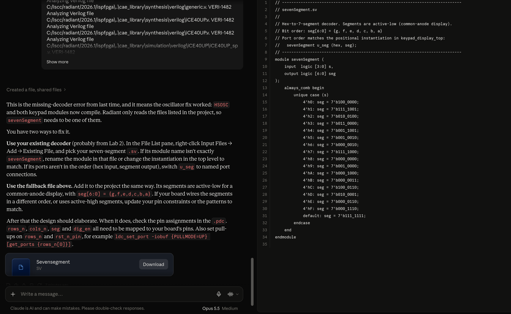
Successful design synthesis for modular approach:
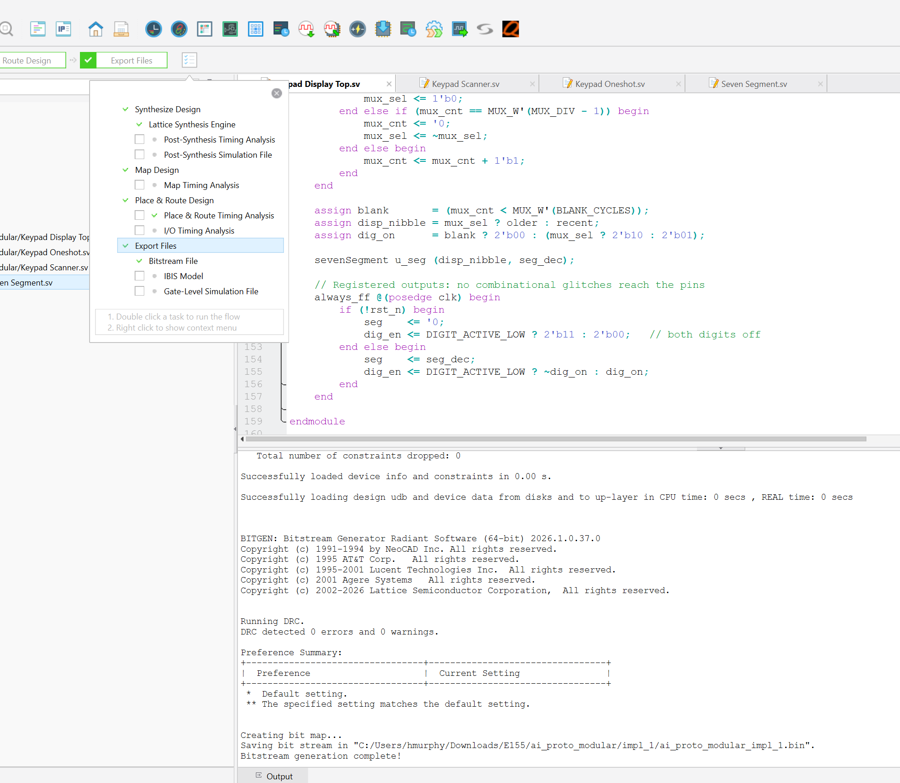
Reflection
For Lab 3’s AI prototype I found the modular approach to be less succesful compared to the monolithic prompt given. It just so happened that with the design generated from the singular monolitc prompt, radiant gave 0 zero error messages upon initial synthesis.
Hours spent
- Verilog design and synthesis: 14h
- Debugging on hardware (ghost-capture and multi-key issues): 8h
- Testbench development and simulation: 10h
- Report writeup, block diagrams, and documentation: 7h
- Total: 39 hours